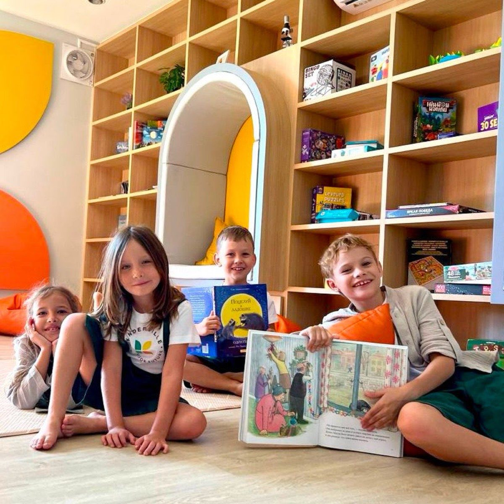

Kinderville Nova — начальная школа и детский сад на Пхукете, дети 2–11 лет. Внутри одной школы идут две программы: британская по Cambridge Primary и русская. Всё, что ниже, — про школьные классы Year 2–6, кампус в Чалонге.
Во второй половине дня дети занимаются делом, у которого есть результат за пределами тетради: меню столовой, сцена, стена выставки, дерево во дворе. Ниже — что вышло за прошлый год.
Задача была не приготовить что-нибудь вкусное, а попасть в меню столовой. Дети отобрали по два рецепта и сели считать: цены продуктов на сайте Makro, время на готовку для всей школы, оценки блюд в своих книгах рецептов. Что прошло отбор — приготовили и вынесли к столовой на дегустацию: кто пробовал, тот отдавал жетон. У младших победили ленивые вареники, у старших — фруктовый пирог с голубикой и манго; название «Тути-фрути» придумали сами. Оба блюда теперь в школьном меню.
Печенье дети пекли сами и сами продавали на школьной ярмарке. Выручили 4 000 ฿ и потратили их на дерево: посадили в декабре, потом по очереди поливали, пока оно приживалось. Дерево растёт во дворе.
В декабре дети плыли свои, школьные старты — с родителями на трибуне, семейным праздником. В феврале команда выступала на соревнованиях: серебро на 50 метрах кролем и две бронзы — кроль и брасс.
Работы с живописи вывешивают прямо в школе — за год выставок было несколько. Декорации к новогодним утренникам и к выпускному тоже делают дети: рисуют и собирают их сами.
В феврале дети сыграли «Ромео и Джульетту» — для родителей, в школе.
В марте школьная команда играла в футбол с академией другой школы; к матчу детям сшили форму с номерами.
В мае танцевальная группа показала родителям открытый урок.
Ребёнок выбирает мастерскую и спорт сам, из того, что открыто в этом году: кукинг (кулинария), живопись, театр, танцы, футбол, плавание. Выбор открывается трижды за год — в начале первого, третьего и пятого учебных модулей. Если не пошло, в следующее окно ребёнок выбирает другое.
Мастерские и спорт идут во второй половине дня — после утренних уроков, обеда и домашней работы. Они входят в полный день; на программе Light ребёнок уходит домой раньше, и второй половины дня у него нет. Как устроен день целиком → Программа. Что входит в каждую программу → Цены.

Мастерские видно только вживую. Покажем кухню, где готовили те самые блюда, дерево во дворе и вторую половину дня в работе. Очно в Чалонге или в видеозвонке; школу показывает основатель.
Или просто напишите — сколько лет ребёнку и что ему интересно.
Kinderville Nova International School · Раваи и Чалонг, Пхукет